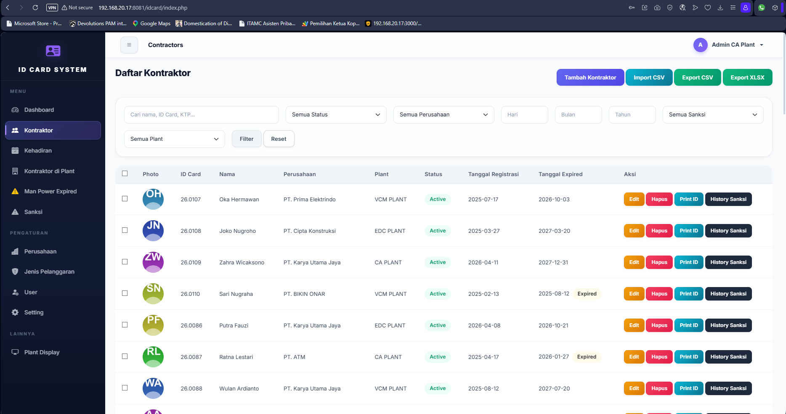
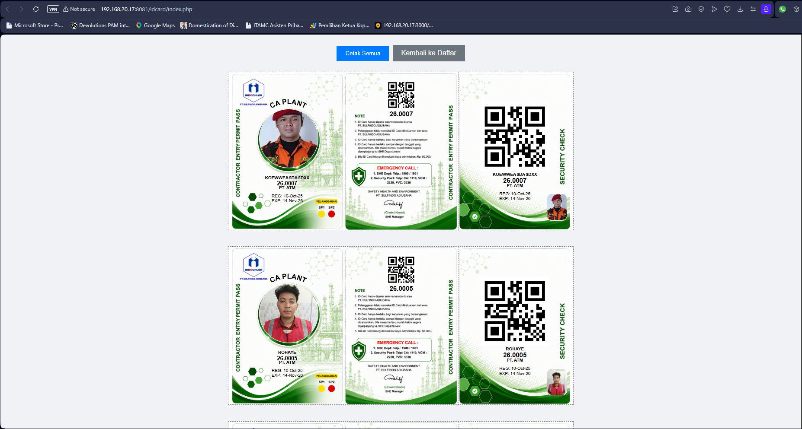
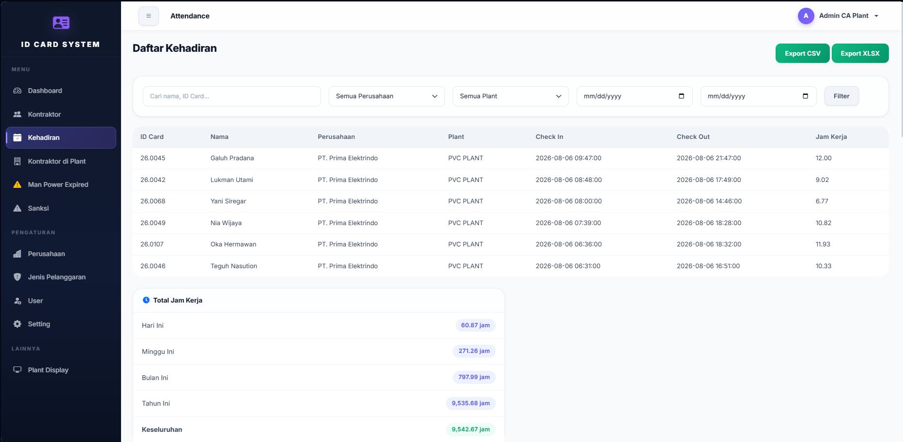
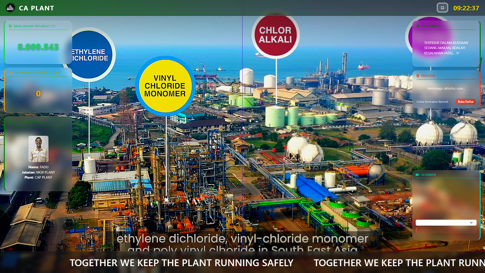
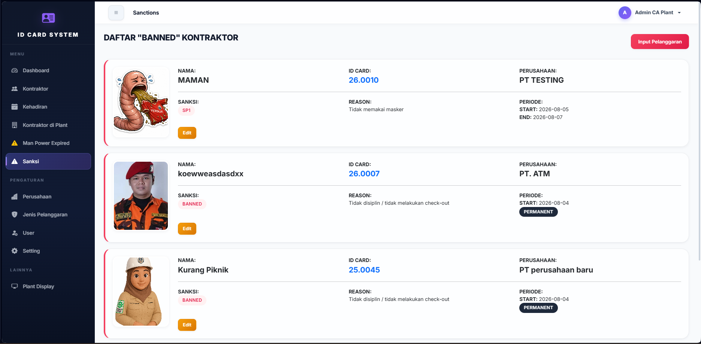
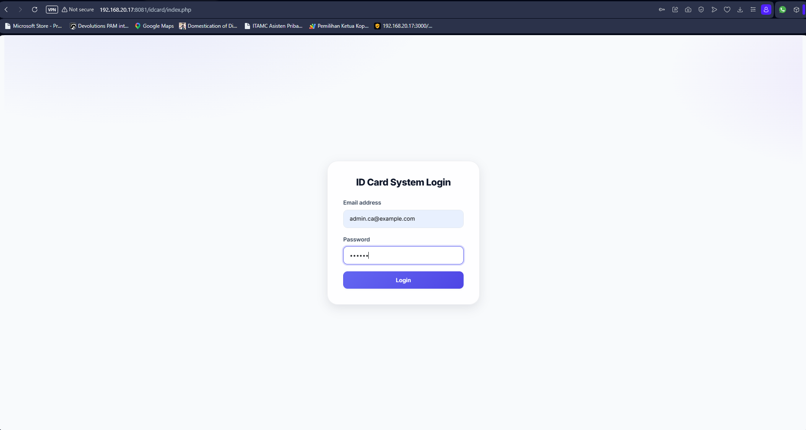

Satu Kartu, Satu Identitas, Kendali Penuh.
Pengenalan sistem manajemen kartu, kehadiran & pengawasan K3 kontraktor.
Banyak perusahaan kontraktor bekerja bersamaan di dalam satu area industri.
Pekerja masuk dan keluar setiap hari — identitasnya harus jelas & terverifikasi.
Satu NIK KTP, satu kartu, satu perusahaan, satu plant. Data ini harus akurat.
Kesimpulan: identitas & kehadiran adalah fondasi keselamatan kerja.
Siapa pun bisa masuk — kita hanya bisa menebak siapa yang lewat.
Pekerja dilarang / kartu expired bisa masuk → risiko kecelakaan & temuan audit.
Jam kerja salah hitung → klaim kontraktor tidak akurat, pembayaran salah.
Tidak ada jejak audit siapa masuk & keluar — sulit diverifikasi.
Dampak nyata: identitas tidak terkontrol = risiko K3, biaya, dan reputasi.
Satu basis data pusat untuk identitas, kartu, kehadiran, dan sanksi. Semua komponen terhubung.
Satu layar: seluruh angka penting
OCR KTP dari HP
Status real-time di TV plant


Hasil: registrasi yang tadinya berjam-jam → hitungan menit.




Satu data benar untuk semua plant.
Banned & expired tidak bisa masuk.
Siapa di dalam plant, kapan pun.
Klaim & laporan berbasis data.
Jejak lengkap masuk-keluar.
Registrasi & cetak cepat, rekap otomatis.
Dari "menebak" menjadi "mengetahui" — keputusan K3 berbasis data.
Verifikasi sanksi, pantau blacklist & man power expired.
Registrasi, cetak kartu, kelola check-in/out harian.
Pastikan setiap scan masuk-keluar selalu dilakukan.
Demo hands-on + jadwal pelatihan per plant.
Silakan ajukan pertanyaan.